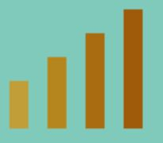

Capítulo 2 Mejores prácticas y recomendaciones
En este capítulo se introducen algunas recomendaciones basadas en lo que se considera mejores prácticas para desplegar gráficas. También se incluye una sección con ejemplos reales de aspectos a evitar al diseñar una gráfica.
Como ya hemos mencionado con anterioridad “una imagen vale más que mil palabras”, pero esto va a depender de varios aspectos, entre ellos:
- Que la imagen no sea ambigua. Es nuestra responsabilidad tratar de eliminar las ambigüedades y ayudar a evidenciar que la imagen comunique el mensaje que se desea transmitir.
- Que quien visualiza la imagen pueda entenderla. Al elegir el tipo de gráfica que representará nuestros datos, debemos considerar a nuestra población objetivo, pues tiene una cosmología propia, que puede ser diferente de la nuestra. No necesariamente todos tenemos el mismo mapa mental y lo que a unos les puede parecer sencillo o evidente, otros pueden no percibirlo así.
Para conseguir lo anterior es necesario:
- Utilizar un mapeo de datos a marcadores y canales visuales que maximicen la expresividad y efectividad de las representaciones visuales.
- Elegir la gráfica más apropiada a la historia que se desea contar, para lo que se debe tomar en consideración la experiencia del público objetivo.
- Añadir el balance adecuado de información adicional: anotaciones, leyendas y etiquetas sin saturar la gráfica, recordando las características de las memorias icónica y de trabajo del sistema de percepción visual.
Para este fin, a lo largo de esta unidad se estudiarán algunas buenas y malas prácticas al momento de representar gráficamente la información, tomando en cuenta aspectos fundamentales en una gráfica como el etiquetado, las escalas, el ordenamiento y el color.
2.1 El color
2.1.1 Propiedades del color
Cuando se habla del color se suele hacer referencia a una sola de sus propiedades: la tonalidad o matiz, que es la cualidad que permite distinguirlo y nombrarlo, como rojo, amarillo y azul. Distintas longitudes de onda de la luz estimulan distintos tipos de receptores en la retina, y son estos los que generan la percepción de tonalidad. Pero el color es un concepto complejo que tiene otras propiedades, como la saturación y el brillo.
Saturación
La saturación se refiere a la pureza con que una tonalidad exhibe su esencia. Un color altamente saturado se ve más “puro”, mientras que uno menos saturado se percibe como diluido. Se refiere a la cantidad de gris que tiene el color, y se puede medir en porcentaje, como se muestra en la figura 2.1.
Figura 2.1: Saturación (medida en porcentaje). Fuente: Adaptado de (Few 2012)
Brillo
El brillo o luminosidad se refiere a la claridad o brillantez de la tonalidad, a la cantidad de luz que refleja, por lo que está relacionado con la cantidad de tonalidad blanca o negra que tiene el color. En un color muy brillante domina el blanco, mientras que, cuando domina el negro, se dice que el color no tiene luminosidad. También se puede medir en porcentaje, como se muestra en la figura 2.2.
Figura 2.2: Brillo o luminosidad (medido en porcentaje). Fuente: Adaptado de (Few 2012)
A la hora de emplear el color, es de vital importancia conocer los tipos de colores de los que disponemos, así como el impacto y restricciones que generan en los espectadores al ser empleados en las gráficas. En la figura 2.3 se muestran tres diferentes paletas de colores
Figura 2.3: Tres paletas de colores. Fuente: (Few 2012)
Para un público adulto, las paletas suaves son más atractivas, más fáciles de asimilar y generan menos cansancio cerebral que las brillantes. En cambio, las paletas brillantes son más atractivas para el público infantil, ya que al estar armando sus redes neuronales llaman más su atención y les facilita la retención de información.
2.1.2 Factores a tomar en cuenta
Al momento de emplear el color se deben tomar en cuenta una serie de aspectos determinantes, tales como:
- Público objetivo. A qué público se van a dirigir las visualizaciones. Esto se debe a que entran en juego diferentes factores culturales. Por ejemplo, en algunas culturas el negro representa luto y en otras se utiliza el blanco para representar la misma idea; asimismo, el verde se asocia con la naturaleza y la esperanza, mientras que en algunas culturas islámicas, se considera un color sagrado y se asocia con la religión y la vida.
En resumen, hay que tener cuidado a la hora de transmitir nuestro mensaje, ya que, si el receptor no tiene nuestro mismo contexto cultural, el mensaje puede cambiar.
Formato final. Si el producto final va a ser impreso en blanco y negro, se tendrá que trabajar más con texturas y con colores altamente contrastantes o bien, con tonalidades de grises, para que el mensaje a transmitir se pueda distinguir al convertir la gráfica a blanco y negro.
Empleo de paleta de colores. Debemos saber identificar en qué momento conviene que utilizar cada tipo de paleta de color. En la siguiente sección presentamos distintos tipos de paletas de colores para ello.
Colores contrastables. Si se debe resaltar información, como una anotación o el valor de una observación en la gráfica, debemos asegurar que el color de fondo y el del dato a resaltar tengan tonalidades altamente contrastables; de lo contrario, será muy difícil leerlos, como ocurre en el primer y tercer rectángulo de la figura 2.3.
Figura 2.4: Diferencias en contraste. Fuente: Elaboración propia
- Daltonismo. Como se ha comentado en la unidad anterior, los conos son los sensores en la retina capaces de percibir el color y están conformados por tres grupos, dependiendo de la tonalidad (en realidad, de la longitud de onda) a la que son más sensibles: rojo, verde y azul. Algunas personas (alrededor del 10 % de la población), conocidas como daltónicas, no tienen un buen funcionamiento de alguno de esos grupos de conos. Este hecho les impide captar todas las longitudes de onda del color, por lo que perciben ciertos colores de manera diferente. Por ello, al elegir una paleta de colores, es importante que no tenga una carga muy fuerte en alguna de esas tres tonalidades si deseamos que el mensaje a transmitir sea percibido sin ambigüedad por todos los observadores.
Algunos tipos de daltonismo son (ver figura 2.5):
- La protanopia, en la que no se pueden captar tonalidades rojas.
- La deuteranopia, en la que no se pueden captar tonalidades verdes.
- La tritanopia, en la que no se pueden captar tonalidades azules.
Figura 2.5: Tres tipos de daltonismo. Fuente: [Ware2013]
- Relación color-tamaño.La capacidad para distinguir colores disminuye con el tamaño de los objetos. Por lo tanto, cuando se emplean puntos en una gráfica, estos deben desplegarse con colores más intensos, mientras que las tonalidades de las barras y columnas deberían utilizar una paleta de colores suave. Por ello, en una gráfica no solo se va a usar una paleta, sino que, dependiendo de sus componentes, se irán combinando.
2.1.3 Empleo del color como canal visual
Representar con color datos categóricos
Cuando representamos datos categóricos, la tonalidad resulta de gran ayuda, aunque hay que tener cuidado con la capacidad de discriminación para discernir entre distintas categorías. La cantidad máxima sugerida es entre 6 y 12 tonalidades en una misma gráfica. Además es importante que a la hora de escoger esas tonalidades sean lo más distinguibles entre sí.
Representar con color datos ordinales
El brillo y la saturación pueden utilizarse para codificar datos ordinales, aunque esto debería hacerse sólo cuando ya se hayan agotado otros canales visuales más efectivos, como la posición y la longitud. La excepción a esta regla ocurre cuando es necesario mostrar una gran cantidad de datos, como lo veremos al desplegar mapas de árbol y mapas de coropletas en las siguientes unidades. En estos casos, el color será nuestro canal visual más apropiado.
2.1.4 Tipos de paletas de colores
Las combinaciones de tonalidades, saturación y luminosidad en las paletas de colores deben ser seleccionadas en función del tipo de datos que se desea codificar. En este sentido, se pueden identificar tres grupos de paletas de colores:
Paletas secuenciales
Son factibles para representar datos ordinales (cuantitativos y categóricos ordenados), previamente normalizados al número de colores disponibles. En las paletas mostradas en la figura 2.6 , se pueden asignar los colores más suaves (situados a la izquierda) a valores más pequeños, y los valores progresivamente más grandes a los colores que se sitúan respectivamente a la derecha, que corresponde a los colores neutros e intensos.
Figura 2.6: Paletas de colores secuenciales. Fuente: Librería RColorBrewer para R
Paletas cualitativas
Son factibles para representar datos categóricos no ordenados. En ellas se han elegido tonalidades que son fácilmente identificables y no generan confusión. Observe en la figura 2.7 que el máximo número de tonalidades en estas paletas es 12, el cual corresponde al máximo número de categorías recomendable en una gráfica.
Figura 2.7: Paletas de colores cualitativas. Fuente: Librería RColorBrewer para R
Paletas divergentes
Son factibles para indicar datos ordinales en los que se puede identificar un valor central (por ejemplo, cero), para distinguir con mayor facilidad aquellos que están por debajo (por ejemplo, valores negativos) o por encima (por ejemplo, valores positivos) de ese valor central. Como se observa en la figura 2.8, el valor central se codifica con la tonalidad al centro de la paleta y los valores inferiores/superiores con las tonalidades a la izquierda/derecha, en función de su magnitud.
Figura 2.8: Paletas de colores divergentes. Fuente: Librería RColorBrewer para R
2.1.5 No abusar del color
Las distintas tonalidades deben utilizarse exclusivamente cuando se necesita mostrar una clara diferenciación entre los datos, muy frecuentemente, cuando estos pertenecen a distintas categorías. De lo contrario, quizás se podrían estar mandando mensajes que no son reales.
Por ejemplo, observe la gráfica de la figura 2.9. Los colores no aportan nada a la gráfica, pues en el eje horizontal ya se han identificado las categorías. Se convierten en un distractor, ya que el cerebro humano, consciente o inconscientemente, tratará de darle una interpretación a los distintos colores.
Figura 2.9: Ejemplo de un uso inapropiado del color. Fuente: Elaboración propia con datos de OCDE
La información representada en la gráfica de la figura 2.10 es la misma que en la gráfica 2.9, pero, de hecho, se distingue más fácilmente si (casi) todas las barras tienen la misma tonalidad. En la imagen mostrada, al emplear una tonalidad distinta para resaltar una categoría en particular, es prácticamente imposible no mirar la gráfica sin prestar inmediatamente atención a esa barra.
Figura 2.10: Ejemplo de un uso adecuado del color. Fuente: Elaboración propia con datos de OCDE
Ejemplo. Observe la siguiente gráfica y analícela tratando de identificar qué elementos están siendo bien y mal empleados según lo visto hasta el momento.

Resultado del análisis En primer lugar, la gráfica no tiene ejes, ni títulos, ni leyendas, por lo que es imposible interpretarla.
En segundo lugar, se observa que la codificación tiene un marcador: las barras y dos canales visuales (la longitud y la saturación). Claramente, la barra a la izquierda tiene una menor longitud que las barras a su derecha y, por lo tanto, habremos de suponer que la magnitud de la variable asociada a esa barra es menor que la de las demás.
Al mismo tiempo, trataremos de darle una interpretación al nivel de saturación de las barras, lo que terminará siendo un distractor que disminuye la efectividad para transmitir el mensaje. En este caso en particular, dado que el porcentaje de saturación se incrementa en el mismo sentido en que se incrementa la magnitud de las barras, podríamos suponer que el autor de la gráfica también está utilizando el canal de saturación para indicar que la magnitud de la variable codificada con la barra de la izquierda es menor que las demás. Si ese fuera el caso y su intención es “dar más fuerza” al mensaje transmitido, deberán considerar, además del efecto distractor, que se ha desperdiciado un segundo canal visual.
2.2 Comunicación efectiva
Al diseñar una gráfica, se busca intentar que la información representada se comprenda de la manera más sencilla y eficiente posible. En ocasiones, esto se consigue con algo tan sencillo como el reordenamiento de los datos que se están representando.
Observe la gráfica de la figura 2.11. Las barras ayudan a codificar la información y a distinguir pequeñas diferencias entre ellas. Rápidamente podemos identificar cúal es el país con mayor o con menor penetración de banda ancha (de los ahí mostrados) o qué países tienen magnitudes similares.
Figura 2.11: Penetración de banda ancha de varios países. Gráfica no ordenada. Fuente: Elaboración propia con datos de OCDE
Sin embargo, tendríamos más dificultad en identificar qué país tiene la cuarta penetración más alta, o cuál es la posición en penetración de un país en particular. Si este último tipo de preguntas forman parte de la narrativa que se desea resaltar con la gráfica, un reordenamiento de los datos, como se muestra en la figura 2.12 resulta de gran valor.
Figura 2.12: Penetración de banda ancha de varios países. Gráfica ordenada. Fuente: Elaboración propia con datos de OCDE
Es la misma información, pero al presentarla ordenada con base en la magnitud, resulta mucho más sencillo realizar comparaciones cuantitativas entre las categorías presentadas. El que el ordenamiento se haga de forma ascendente o descendente, también depende de la narrativa que se desea comunicar.
2.3 Etiquetado
Acompañar a las gráficas de elementos de información complementarios, es fundamental para poder comprenderlas e interpretarlas. Por ello, no pueden faltar en ellas, al menos: * Nombre y valores en cada uno de los ejes. * Leyenda, cuando tenemos datos categóricos.
Veamos en la figura 2.13 un ejemplo de mal (de un nulo) etiquetado:
Figura 2.13: Ejemplo de una gráfica mal etiquetada
Vemos una gráfica compuesta por una curva gris, una naranja y puntos en cada una de las curvas con el mismo color; podemos asumir que representan una variable categórica pero no podemos saber de qué se trata.
El fenómeno representado por la línea naranja se expresa a través de tres puntos (naranja, azul y verde), con sus equivalentes paralelos, pero en su correspondiente lugar en la línea gris. Sin embargo, al no disponer de ningún elemento informativo, es imposible darle sentido.
Se concluye que un buen etiquetado es fundamental para cumplir la función comunicativa de las gráficas.
En resumen, las visualizaciones comunican información, y, para que lo hagan de manera efectiva, se deben cumplir los siguientes requisitos:
- Deben ser tan autocontenidas como sea posible.
- Es importante asignar títulos, etiquetas y leyendas que tengan sentido para la información que se va a transmitir.
- Solo hay que considerar añadir anotaciones adicionales si con ello se fortalece el mensaje que se desea transmitir.
Resaltamos de manera particular los últimos dos puntos. Edwar Tufte, un muy reconocido pionero en el campo de la visualización de datos, introdujo el concepto de data-ink ratio, que se refiere a la proporción que guardan los elementos gráficos (marcadores y canales) que codifican los datos, con relación a todos los demás elementos de soporte (como etiquetas, títulos, leyendas y anotaciones) o decorativos (como logotipos e imágenes de fondo).
Una imagen con un valor alto de data-ink ratio significa que está ocupando más espacio para representar los datos, y esto suele traducirse en visualizaciones más efectivas.
2.4 Gráficas en tres dimensiones
Si bien nuestro entorno es un espacio de tres dimensiones, nuestro sistema de percepción visual adquiere más información y de manera más sencilla en un plano de dos dimensiones. La información de profundidad (la tercera dimensión) es mucho más difícil de adquirir y procesar.
Esa es una de las razones por las cuales es muy aconsejable evitar presentar información con gráficas tridimensionales, como la que aparece en la imagen de la figura 2.14.
Figura 2.14: Una gráfica en tres dimensiones Fuente: Couron, A., LivingQlik
Ahora resulta mucho más difícil estimar los valores correspondientes a la altura de las columnas que contiene la información sobre las magnitudes de interés, y esta dificultad se acentúa conforme se alejan del eje. Se ha perdido una de las grandes fortalezas que nuestro sistema perceptual tiene para distinguir las magnitudes de las barras y columnas.
Otro problema con estas gráficas es el ocultamiento, pues, como se observa en la figura, algunas barras impiden ver a otras de menor magnitud que se encuentran detrás de ellas.
2.5 Malas prácticas a evitar
2.5.1 Sugerir tendencias donde no las hay
Las gráficas de líneas se asocian con patrones adquiridos y almacenados en nuestro cerebro que sugieren fuertemente una relación tendencial. Por ello, se deben utilizar casi exclusivamente para datos ordenados en los que mostrar dicha tendencia es información valiosa para apoyar nuestra narrativa.
En otros casos, en particular cuando se están presentando datos de variables categóricas, graficarlos con un marcador de línea no es una buena práctica.
En la gráfica de la izquierda en la figura 2.15 se está graficando el número de alumnos en cinco grupos distintos. El título es ambiguo, lo que fortalece la primera impresión que la mayoría de la gente tiene al suponer que el número de alumnos está en aumento, aunque a diferentes tasas. Solo después de observar las etiquetas en el eje horizontal podemos considerar que esa primera impresión puede no tener mucho sentido (¿por qué el número de grupo habría de incidir en el número de alumnos?).
Figura 2.15: Ejemplo sobre la importancia de elegir marcadores adecuados. Fuente: Elaboración propia
La gráfica de la derecha contiene la misma información, y la misma ambigüedad en el título, pero en la mayoría de la gente no genera una asociación tendencial tan fuerte.
2.5.2 Origen de los ejes
Cuando en una gráfica se están comparando magnitudes, el eje en el que se representan dichas magnitudes siempre debe iniciar en cero (si los datos no contienen valores negativos). De lo contrario, debido a que nuestro sistema perceptual está basado en juicios relativos, el mensaje que estaremos recibiendo estará sesgado.
La gráfica de la izquierda en la figura 2.16 sugiere que la sucursal San Ángel captó 2/5 (40%) más clientes que Jacarandas y 4/5 (80%) más que Alpes. Esta impresión se ve reforzada por las líneas de apoyo al eje vertical (llamadas líneas de cuadrícula).
Figura 2.16: Ejemplo sobre la importancia de que el eje inicie en cero. Fuente: Elaboración propia
La realidad es muy distinta, como se muestra en la gráfica de la derecha. Ciertamente San Ángel captó más clientes que las demás, pero solo un 10% más que Insurgentes y un 19 % más que Alpes.
2.5.3 Gráficas de pastel
En la unidad anterior comentamos que las gráficas de pastel, al estar basadas en ángulos y áreas, son difíciles de interpretar y deben utilizarse esporádicamente. Sin embargo, son sumamente populares por lo que no podemos descartarlas por completo de nuestro portafolio de herramientas para visualización de datos. Desgraciadamente, los errores que se cometen con ellas también son populares.
Una gráfica de pastel debe ser utilizada exclusivamente para mostrar la proporción en que cada elemento, de los observados, contribuye a la totalidad. Por ello, la contribución de cada elemento se da en porcentaje y su suma debe ser 100%. En la figura 2.17 ese no es el caso. La interpretación se complica todavía más porque se están comparando datos de años distintos, que no contribuyen a la totalidad de un mismo conjunto de datos.
Figura 2.17: Las partes de la gráfica no suman 100%. Fuente: (Hooper. 2021)
Por otro lado, el área de cada porción debe ser proporcional a la contribución de ese elemento a la totalidad de las observaciones. En la gráfica de la figura 2.18, por error o con intención, ese no es el caso.
Figura 2.18: Los porcentajes no corresponden a las áreas. Fuente: (Hooper. 2021)
2.6 Comentarios finales y máximas sobre la conversación
En esta unidad hemos mostrado algunas de las principales propiedades de las gráficas que nos ayudan a alcanzar el objetivo final de nuestras representaciones visuales: comunicar un mensaje de manera clara y eficiente. También hemos identificado algunas malas prácticas que se presentan con cierta regularidad en el diseño de información gráfica. A continuación, se incluyen algunas recomendaciones que sin duda le ayudarán a realizar visualizaciones de datos más efectivas:
Funcionalidad antes de forma. Es muy peligroso empezar a concebir la representación visual a partir de elementos estéticos (pensar en una gráfica “bonita”) y solo después pensar en los datos y en la historia que queremos narrar. El diseño de la gráfica siempre debe empezar enfocado en la funcionalidad (qué queremos que la gráfica cuente) y, poco a poco, se añaden elementos estéticos, tomando en cuenta, de ser posible, nuestra población objetivo, es decir, a quién va dirigido el mensaje.
High data-ink ratio. Tengamos siempre presente el principio de diseño de Edward Tufte: high data-ink ratio. Sobre todas las cosas, se debe asegurar que las gráficas muestran los datos y la historia detrás de ellos.
- Evitar resaltar elementos de fondo; utilizar líneas delgadas y tonos neutros, que no distraigan la atención del observador.
- No variar un canal visual, a menos que el cambio signifique algo que realmente se desea.
- Less is more. Recordemos que la memoria de trabajo solo puede retener unos cuantos patrones visuales. Por ello, hay que procurar reducir al máximo el número de bloques de elementos que contiene nuestra gráfica.
“Simplicity is ab“Simplicity is about eliminating the obvious (and everything else that doesn’t support your purpose), and enhancing the meaningful.”out eliminating the obvious (and everything else that doesn’t support your purpose), and enhancing the meaningful.”
“In anything at all, perfection is finally attained not when there is no longer anything to add, but when there is no longer anything to take away.”
— Antoine de St. Exupery
Finalmente, porque una representación visual es una forma de comunicación, te invitamos a que siempre tengas presente las máximas sobre la conversación de Paul Grice, un filósofo británico ampliamente reconocido por sus contribuciones en el campo de la lingüística:
- Cantidad El mensaje debe ser tan informativo como sea necesario.
- Calidad. No comuniques lo que crees que es falso o aquello para lo cual te falta evidencia.
- Relevancia El mensaje debe ser relevante para la conversación.
- Forma Sé breve, claro y ordenado. Evita la ambigüedad